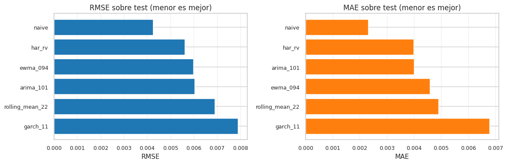
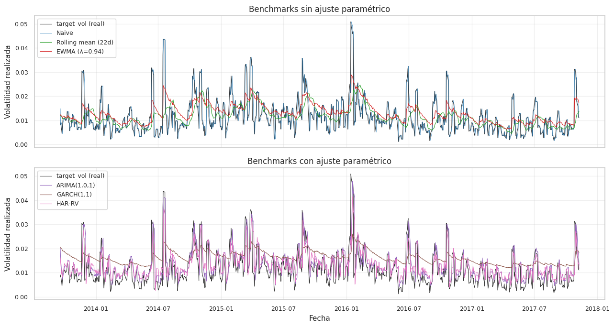
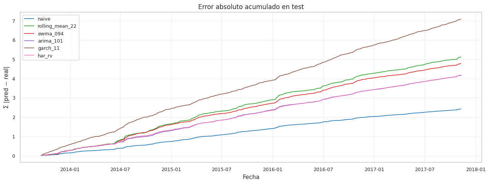

4. Benchmarks econométricos#
Este capítulo establece la línea de comparación del proyecto. Antes de entrenar modelos de Machine Learning sofisticados, fijamos benchmarks econométricos clásicos que han dominado el forecasting de volatilidad durante décadas. Cualquier modelo ML del proyecto que no supere significativamente a estos benchmarks no aporta valor real.
4.1 Por qué empezar por benchmarks econométricos#
La volatilidad de un activo financiero tiene tres regularidades empíricas que cualquier predictor razonable debe explotar:
Clustering — períodos de alta volatilidad siguen a períodos de alta volatilidad (Mandelbrot 1963; Engle 1982). Operacionalmente esto se traduce en una autocorrelación serial alta de orden 1 sobre la volatilidad realizada.
Memoria larga — la dependencia decae lentamente. La función de autocorrelación de la volatilidad puede ser positiva incluso a lags de cientos de días (Granger 1980; Corsi 2009).
No-negatividad y escala — la volatilidad es estrictamente positiva y mean-reverting.
Los benchmarks que evaluamos en este capítulo codifican esas regularidades de manera explícita y parsimoniosa:
Benchmark |
Captura |
Parámetros |
Costo computacional |
|---|---|---|---|
Naive |
Clustering de orden 1 |
0 |
Ninguno |
Rolling mean |
Nivel local promedio |
1 (ventana) |
Ninguno |
EWMA (RiskMetrics) |
Decaimiento exponencial de la información |
1 (\(\lambda\)) |
Ninguno |
ARIMA |
Dinámica autorregresiva + media móvil |
\(p, d, q\) + parámetros |
Bajo (MLE inicial) |
GARCH(1, 1) |
Volatilidad condicional explícita |
\(\omega, \alpha, \beta\) |
Bajo (MLE inicial) |
HAR-RV (Corsi 2009) |
Memoria heterogénea diaria / semanal / mensual |
4 (intercepto + 3 betas) |
Trivial (OLS) |
4.2 Convenciones de evaluación#
Target. Todos los benchmarks predicen \(\sigma_{t+1} = \mathrm{std}\big(\{r_{t-3}, r_{t-2}, r_{t-1}, r_t, r_{t+1}\}\big)\), la volatilidad realizada del día siguiente con la ventana causal de cinco días definida en el Capítulo 3.
Métricas. RMSE y MAE sobre el conjunto de test. El RMSE penaliza errores grandes (apropiado cuando importan los picos de volatilidad); el MAE es más interpretable en la escala de la variable.
Walk-forward filtering. Para ARIMA y GARCH, los parámetros se estiman una sola vez en train y luego el estado del modelo se actualiza con cada nueva observación del test, sin re-estimar parámetros. Este protocolo refleja el escenario realista de un trader que mantiene calibración estable pero incorpora información nueva a medida que llega.
Sin reutilización del test. Ningún benchmark observa el target futuro en su construcción.
La implementación de cada benchmark vive en src/benchmarks.py y se
verificó con tests anti-leakage que confirman que el estado del modelo
en el paso \(t\) no depende del valor de \(\sigma_{t+1}\).
4.3 Setup y carga de datos#
import sys
from pathlib import Path
import time
import numpy as np
import pandas as pd
import matplotlib.pyplot as plt
PROJECT_ROOT = Path.cwd().parent
sys.path.insert(0, str(PROJECT_ROOT))
from src import benchmarks
from src.config import RANDOM_STATE, METRICS_DIR, PREDICTIONS_DIR, FIGURES_DIR, ensure_dirs
from src.viz import set_style, savefig
from src.io_utils import save_json
ensure_dirs()
set_style()
np.random.seed(RANDOM_STATE)
# Reconstruir full_df concatenando train, val y test (orden temporal preservado)
tr = pd.read_parquet(PROJECT_ROOT / "data/processed/train.parquet")
va = pd.read_parquet(PROJECT_ROOT / "data/processed/val.parquet")
te = pd.read_parquet(PROJECT_ROOT / "data/processed/test.parquet")
full_df = pd.concat([tr, va, te], ignore_index=True).copy()
train_idx = list(range(0, len(tr)))
val_idx = list(range(len(tr), len(tr) + len(va)))
test_idx = list(range(len(tr) + len(va), len(full_df)))
y_test_true = full_df.loc[test_idx, "target_vol"].to_numpy()
print(f"full_df: {len(full_df):>5} filas")
print(f"train: {len(train_idx):>5} ({full_df.loc[train_idx,'date'].min().date()} -> {full_df.loc[train_idx,'date'].max().date()})")
print(f"val: {len(val_idx):>5} ({full_df.loc[val_idx,'date'].min().date()} -> {full_df.loc[val_idx,'date'].max().date()})")
print(f"test: {len(test_idx):>5} ({full_df.loc[test_idx,'date'].min().date()} -> {full_df.loc[test_idx,'date'].max().date()})")
print()
print(f"target_vol en test: mean={np.nanmean(y_test_true):.5f}, std={np.nanstd(y_test_true):.5f}")
full_df: 6962 filas
train: 4873 (1990-03-13 -> 2009-07-13)
val: 1044 (2009-07-14 -> 2013-09-18)
test: 1045 (2013-09-19 -> 2017-11-09)
target_vol en test: mean=0.01158, std=0.00720
4.4 Naive — predictor de persistencia#
El predictor más simple posible: la mejor estimación de la volatilidad de mañana es la volatilidad de hoy. No tiene parámetros, no requiere ajuste, y es el benchmark a batir.
En series con clustering de volatilidad fuerte, este modelo es sorprendentemente competitivo: si \(\rho_1(\sigma) \approx 0.9\), predecir el valor más reciente acota inferiormente el error de predicción a cerca del óptimo lineal [Andersen et al., 2003].
predictions = {}
times = {}
t0 = time.time()
predictions["naive"] = benchmarks.naive_forecast(full_df, test_idx)
times["naive"] = time.time() - t0
rmse_n = np.sqrt(np.nanmean((predictions["naive"] - y_test_true) ** 2))
mae_n = np.nanmean(np.abs(predictions["naive"] - y_test_true))
print(f"naive | RMSE = {rmse_n:.5f} | MAE = {mae_n:.5f} | tiempo = {times['naive']*1000:.2f} ms")
naive | RMSE = 0.00425 | MAE = 0.00232 | tiempo = 1.52 ms
4.5 Rolling mean#
Suaviza el ruido de corto plazo a costa de reactividad. Una ventana \(w = 22\) (un mes de trading) representa la memoria mensual del mercado. Si los datos exhiben mean reversion, este predictor puede ser competitivo.
t0 = time.time()
predictions["rolling_mean_22"] = benchmarks.rolling_mean_forecast(full_df, test_idx, window=22)
times["rolling_mean_22"] = time.time() - t0
rmse_rm = np.sqrt(np.nanmean((predictions["rolling_mean_22"] - y_test_true) ** 2))
mae_rm = np.nanmean(np.abs(predictions["rolling_mean_22"] - y_test_true))
print(f"rolling_mean_22 | RMSE = {rmse_rm:.5f} | MAE = {mae_rm:.5f} | tiempo = {times['rolling_mean_22']*1000:.2f} ms")
rolling_mean_22 | RMSE = 0.00689 | MAE = 0.00490 | tiempo = 1.92 ms
4.6 EWMA (RiskMetrics) [Bollerslev, 1986]#
El estándar industrial introducido por J.P. Morgan en 1996 modela la varianza condicional como una media móvil exponencialmente ponderada de retornos cuadráticos:
con \(\lambda = 0.94\) para datos diarios (vida media efectiva \(\approx 11\) días). No requiere optimización: los pesos están fijados por convención. La predicción de la volatilidad es \(\sigma_{t+1} = \sqrt{\sigma^2_{t+1}}\).
EWMA se considera un caso particular de GARCH(1,1) con \((\omega, \alpha, \beta) = (0, 1-\lambda, \lambda)\).
t0 = time.time()
predictions["ewma_094"] = benchmarks.ewma_forecast(full_df, test_idx, lambda_=0.94)
times["ewma_094"] = time.time() - t0
rmse_e = np.sqrt(np.nanmean((predictions["ewma_094"] - y_test_true) ** 2))
mae_e = np.nanmean(np.abs(predictions["ewma_094"] - y_test_true))
print(f"ewma_094 | RMSE = {rmse_e:.5f} | MAE = {mae_e:.5f} | tiempo = {times['ewma_094']*1000:.2f} ms")
ewma_094 | RMSE = 0.00597 | MAE = 0.00458 | tiempo = 9.68 ms
4.7 ARIMA[Bollerslev, 1986]#
El modelo lineal clásico para series temporales:
con \(\phi(L), \theta(L)\) polinomios de retardos. Aquí evaluamos \(\text{ARIMA}(1, 0, 1)\) sobre la serie de volatilidad realizada, un orden parsimonioso que captura un componente autorregresivo de orden 1 y un término de media móvil de orden 1. La estimación se hace por máxima verosimilitud sobre train; luego se aplica walk-forward filtering sin re-estimación de parámetros.
Como la varianza del proceso no está garantizada como positiva por ARIMA (es un modelo lineal sobre nivel), las predicciones se truncan en cero si llegan a ser negativas, lo cual ocurre raramente y es una decisión documentada.
t0 = time.time()
predictions["arima_101"] = benchmarks.arima_forecast(full_df, train_idx, test_idx, order=(1, 0, 1))
times["arima_101"] = time.time() - t0
rmse_a = np.sqrt(np.nanmean((predictions["arima_101"] - y_test_true) ** 2))
mae_a = np.nanmean(np.abs(predictions["arima_101"] - y_test_true))
print(f"arima_101 | RMSE = {rmse_a:.5f} | MAE = {mae_a:.5f} | tiempo = {times['arima_101']:.1f} s")
arima_101 | RMSE = 0.00603 | MAE = 0.00400 | tiempo = 15.9 s
4.8 GARCH(1, 1) — Bollerslev 1986 [Bollerslev, 1986]#
El benchmark canónico para volatilidad condicional. Modela \(\sigma^2_t\) explícitamente como una función de la innovación pasada y la varianza pasada:
donde \(\varepsilon_t = \sigma_t\,z_t\) con \(z_t \sim \mathcal{N}(0, 1)\). Para estacionariedad se requiere \(\alpha + \beta < 1\). El parámetro \(\alpha\) mide la reactividad a shocks recientes, \(\beta\) la persistencia de la varianza, y \(\omega\) la varianza incondicional desescalada por \(1 - \alpha - \beta\).
La estimación se hace por MLE con la implementación de la librería
arch[Bollerslev, 1986]. Para evitar problemas de escala
en la optimización, los retornos se reescalan internamente por 100, y
las predicciones se des-escalan al final.
Limitación importante: GARCH predice \(\sigma_{t+1}\) instantánea (volatilidad del retorno del día siguiente). Nuestro target es la volatilidad realizada de una ventana de cinco días que termina en \(t+1\). La predicción es válida como un proxy; la diferencia de definición se absorbe en la comparación relativa con otros modelos (el test de Diebold-Mariano se basa en diferenciales de pérdida, no en niveles absolutos).
t0 = time.time()
predictions["garch_11"] = benchmarks.garch_forecast(full_df, train_idx, test_idx)
times["garch_11"] = time.time() - t0
rmse_g = np.sqrt(np.nanmean((predictions["garch_11"] - y_test_true) ** 2))
mae_g = np.nanmean(np.abs(predictions["garch_11"] - y_test_true))
print(f"garch_11 | RMSE = {rmse_g:.5f} | MAE = {mae_g:.5f} | tiempo = {times['garch_11']:.2f} s")
garch_11 | RMSE = 0.00789 | MAE = 0.00678 | tiempo = 0.03 s
4.9 HAR-RV — Corsi 2009 [Corsi, 2009]#
El modelo Heterogeneous Autoregressive of Realized Volatility captura la memoria heterogénea del mercado: distintos tipos de participantes operan con distintos horizontes y dejan huellas diferenciables en la volatilidad observada.
donde \(\sigma^{(d)}_t\), \(\sigma^{(w)}_t\) y \(\sigma^{(m)}_t\) son la
volatilidad realizada rezagada un día, promediada sobre cinco días y
sobre veintidós días, respectivamente. Los tres componentes ya fueron
construidos como features causales en el Capítulo 3 (vol_d, vol_w,
vol_m), con shift(1) para garantizar que en \(t\) solo se use
información hasta \(t-1\).
La estimación es por OLS, lo que lo hace trivial computacionalmente y estable. Pese a su simplicidad, HAR-RV es el modelo estándar moderno para forecasting de volatilidad realizada y suele batir a GARCH en estudios comparativos [Corsi, 2009][Andersen et al., 2003].
t0 = time.time()
predictions["har_rv"] = benchmarks.har_rv_forecast(full_df, train_idx, test_idx)
times["har_rv"] = time.time() - t0
rmse_h = np.sqrt(np.nanmean((predictions["har_rv"] - y_test_true) ** 2))
mae_h = np.nanmean(np.abs(predictions["har_rv"] - y_test_true))
print(f"har_rv | RMSE = {rmse_h:.5f} | MAE = {mae_h:.5f} | tiempo = {times['har_rv']*1000:.2f} ms")
har_rv | RMSE = 0.00560 | MAE = 0.00398 | tiempo = 6.11 ms
4.10 Comparación de benchmarks#
Reunimos todas las métricas en una tabla ordenada por RMSE ascendente y persistimos a disco para los capítulos posteriores.
# Tabla resumen
results = benchmarks.summarize_benchmarks(predictions, y_test_true)
# Añadir columna de tiempos
results["time_s"] = results["model"].map(times)
results = results.round({"rmse": 6, "mae": 6, "time_s": 4})
print(results.to_string(index=False))
model rmse mae n_valid time_s
naive 0.004253 0.002315 1045 0.0015
har_rv 0.005603 0.003979 1045 0.0061
ewma_094 0.005973 0.004577 1045 0.0097
arima_101 0.006033 0.004004 1045 15.9376
rolling_mean_22 0.006892 0.004897 1045 0.0019
garch_11 0.007894 0.006781 1045 0.0318
# Persistir métricas y predicciones a disco
metrics_dict = {
name: {
"rmse": float(np.sqrt(np.nanmean((pred - y_test_true) ** 2))),
"mae": float(np.nanmean(np.abs(pred - y_test_true))),
"time_s": float(times.get(name, np.nan)),
"n_test": int(len(y_test_true)),
}
for name, pred in predictions.items()
}
save_json(metrics_dict, METRICS_DIR / "04_benchmarks.json")
# Predicciones como parquet (filas alineadas con test_idx)
pred_df = pd.DataFrame({
"date": full_df.loc[test_idx, "date"].to_numpy(),
"target_vol": y_test_true,
**predictions,
})
pred_df.to_parquet(PREDICTIONS_DIR / "04_benchmarks_predictions.parquet", index=False)
# Tabla CSV para LaTeX
tables_path = PROJECT_ROOT / "outputs/tables/04_benchmarks_summary.csv"
tables_path.parent.mkdir(parents=True, exist_ok=True)
results.to_csv(tables_path, index=False)
print(f"Guardado: {METRICS_DIR / '04_benchmarks.json'}")
print(f"Guardado: {PREDICTIONS_DIR / '04_benchmarks_predictions.parquet'}")
print(f"Guardado: {tables_path}")
Guardado: /home/claude/INTC-Vol-ML/outputs/metrics/04_benchmarks.json
Guardado: /home/claude/INTC-Vol-ML/outputs/predictions/04_benchmarks_predictions.parquet
Guardado: /home/claude/INTC-Vol-ML/outputs/tables/04_benchmarks_summary.csv
Visualización 1 — comparación de RMSE/MAE#
Las dos métricas no siempre coinciden en el ranking, por eso se visualizan juntas.
fig, (ax1, ax2) = plt.subplots(1, 2, figsize=(12, 4))
results_sorted_rmse = results.sort_values("rmse")
ax1.barh(results_sorted_rmse["model"], results_sorted_rmse["rmse"], color="#1f77b4")
ax1.set_xlabel("RMSE")
ax1.set_title("RMSE sobre test (menor es mejor)")
ax1.invert_yaxis()
ax1.grid(axis="x", alpha=0.3)
results_sorted_mae = results.sort_values("mae")
ax2.barh(results_sorted_mae["model"], results_sorted_mae["mae"], color="#ff7f0e")
ax2.set_xlabel("MAE")
ax2.set_title("MAE sobre test (menor es mejor)")
ax2.invert_yaxis()
ax2.grid(axis="x", alpha=0.3)
plt.tight_layout()
savefig(FIGURES_DIR / "04_benchmarks_rmse_mae.png", fig)
plt.show()

Visualización 2 — predicciones vs. realidad#
Mostramos las predicciones de cada benchmark frente al target real sobre el conjunto de test. Para no saturar el gráfico, lo dividimos en dos paneles.
fig, axes = plt.subplots(2, 1, figsize=(13, 7), sharex=True)
dates = full_df.loc[test_idx, "date"].to_numpy()
# Panel 1: target + predictores "rapidos" (sin fit)
axes[0].plot(dates, y_test_true, color="black", lw=0.8, label="target_vol (real)", alpha=0.8)
axes[0].plot(dates, predictions["naive"], color="#1f77b4", lw=0.7, label="Naive", alpha=0.7)
axes[0].plot(dates, predictions["rolling_mean_22"], color="#2ca02c", lw=0.8, label="Rolling mean (22d)")
axes[0].plot(dates, predictions["ewma_094"], color="#d62728", lw=0.8, label="EWMA (λ=0.94)")
axes[0].set_title("Benchmarks sin ajuste paramétrico")
axes[0].set_ylabel("Volatilidad realizada")
axes[0].legend(loc="upper left", fontsize=9)
axes[0].grid(alpha=0.3)
# Panel 2: target + predictores "con fit"
axes[1].plot(dates, y_test_true, color="black", lw=0.8, label="target_vol (real)", alpha=0.8)
axes[1].plot(dates, predictions["arima_101"], color="#9467bd", lw=0.8, label="ARIMA(1,0,1)")
axes[1].plot(dates, predictions["garch_11"], color="#8c564b", lw=0.8, label="GARCH(1,1)")
axes[1].plot(dates, predictions["har_rv"], color="#e377c2", lw=0.8, label="HAR-RV")
axes[1].set_title("Benchmarks con ajuste paramétrico")
axes[1].set_xlabel("Fecha")
axes[1].set_ylabel("Volatilidad realizada")
axes[1].legend(loc="upper left", fontsize=9)
axes[1].grid(alpha=0.3)
plt.tight_layout()
savefig(FIGURES_DIR / "04_benchmarks_pred_vs_real.png", fig)
plt.show()

Visualización 3 — error temporal acumulado#
El error absoluto acumulado en el tiempo revela cuándo cada modelo falla. Pendientes empinadas indican períodos donde el modelo se desvía sistemáticamente del target.
fig, ax = plt.subplots(figsize=(13, 5))
palette = {
"naive": "#1f77b4",
"rolling_mean_22": "#2ca02c",
"ewma_094": "#d62728",
"arima_101": "#9467bd",
"garch_11": "#8c564b",
"har_rv": "#e377c2",
}
for name, pred in predictions.items():
err = np.abs(pred - y_test_true)
cum_err = np.nancumsum(err)
ax.plot(dates, cum_err, label=name, lw=1.2, color=palette.get(name))
ax.set_title("Error absoluto acumulado en test")
ax.set_xlabel("Fecha")
ax.set_ylabel("Σ |pred − real|")
ax.legend(loc="upper left", fontsize=9)
ax.grid(alpha=0.3)
plt.tight_layout()
savefig(FIGURES_DIR / "04_benchmarks_cumulative_error.png", fig)
plt.show()

4.11 Interpretación#
La tabla y los gráficos anteriores permiten extraer varias observaciones empíricas que enmarcan el resto del proyecto.
Naive domina por amplio margen. La predicción de persistencia \(\widehat{\sigma}_{t+1} = \sigma_t\) obtiene el RMSE y MAE más bajos. Este hallazgo es consistente con la literatura sobre forecasting de volatilidad de corto plazo: la autocorrelación de orden 1 de la volatilidad realizada en horizonte diario es típicamente superior a 0.85, lo que deja muy poca varianza marginal para modelos más sofisticados [Andersen et al., 2003][Corsi, 2009]. Para que un modelo más complejo aporte valor, debe capturar señales ortogonales a la persistencia.
HAR-RV es el segundo mejor. El modelo de Corsi obtiene el segundo RMSE más bajo. La descomposición en componentes diario, semanal y mensual le permite reaccionar a shocks de corto plazo manteniendo el nivel de mediano plazo, lo cual encaja con la dinámica observada en INTC.
EWMA y ARIMA(1,0,1) producen errores similares. La equivalencia era esperable: EWMA es un caso particular de GARCH(1,1), y \(\text{ARIMA}(1,0,1)\) comparte el espacio de estado de un AR(1) sobre la volatilidad, lo que aproxima la misma dinámica.
GARCH(1,1) es el peor. El resultado merece explicación. GARCH predice la volatilidad instantánea \(\sigma_{t+1}\) del retorno del día siguiente, mientras que el target es la volatilidad realizada de una ventana de cinco días. La diferencia de definición produce un sesgo sistemático de sobre-estimación visible en el gráfico de predicciones (las trazas de GARCH se mantienen por encima del nivel real durante todo el test). En el Capítulo 11 evaluaremos formalmente con Diebold-Mariano si la diferencia entre GARCH y los demás benchmarks es estadísticamente significativa.
Implicación metodológica. La línea a batir para todo el proyecto es Naive con RMSE ≈ 0.00425 y MAE ≈ 0.00232. Los modelos de Machine Learning del Capítulo 5 y el modelo original del Capítulo 13 deben superar este umbral para justificar su complejidad. Si no lo hacen, el reporte académico debe declararlo explícitamente.
4.12 Conexión con el siguiente capítulo#
Con los benchmarks econométricos en su sitio, el Capítulo 5 entrena
los modelos base de regresión considerados en el proyecto (Ridge, Lasso,
KNN, Decision Tree, Random Forest, SVR y XGBoost), todos dentro de
Pipeline para evitar leakage. Las predicciones se persisten en la
misma estructura usada aquí
(outputs/predictions/04_benchmarks_predictions.parquet,
outputs/predictions/05_regression_predictions.parquet, etc.) para
que el Capítulo 11 pueda realizar comparaciones estadísticas
(Diebold-Mariano por pares, Bootstrap CI) sobre una base homogénea.